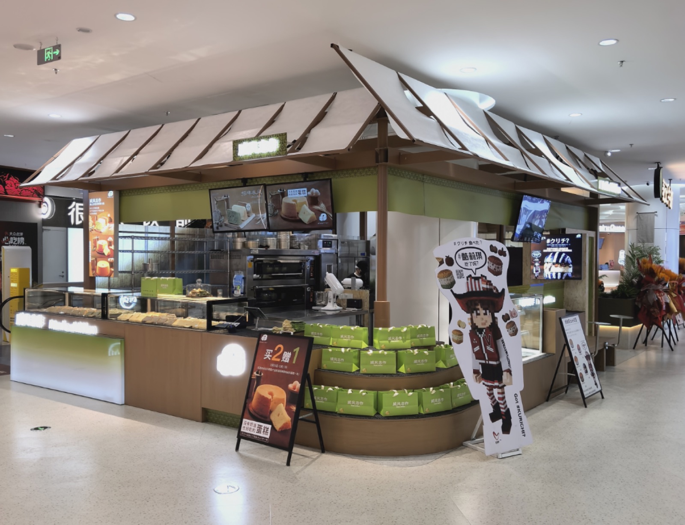

「#クリチ」が上海野雀真香面包节に初出店。國見クリチも現地参戦

日本・大阪発のクリームチーズバーガー #クリチ が、中国・上海で開催されたパンイベント 「上海野雀真香面包节」 に出店しました。
会場は 上海环宇城MAX。
開催期間は 4月30日〜5月4日。
#クリチは、すでに中国国内の複数店舗で販売されており、今回は中国での展開をさらに広げる取り組みとして、上海のパンフェスに初めて参加しました。
上海のパンフェスで#クリチをPR
「上海野雀真香面包节」は、多くのパン・スイーツブランドが集まるイベントです。
今回、#クリチは日本・大阪発の新感覚スイーツとして、会場の市集ブランド一覧にも掲載され、上海のパン好きのお客様に向けて魅力を発信しました。
赤と白を基調にした#クリチブースには、多くのお客様が来場。
クリームチーズバーガーというユニークな見た目や、スイーツとしての新しい楽しみ方に、現地でも多くの関心が寄せられました。
國見クリチも現地参戦
さらに今回は、國見クリチ も現地に参戦しました。
#クリチのキャラクターパネルを手に、会場でのPRや写真撮影を行い、来場者とのコミュニケーションを通じて、#クリチの世界観を楽しく届けました。
現地の活気ある雰囲気の中で、商品だけでなく、キャラクターやブランドの楽しさも伝える機会となりました。
中国での販売展開から、イベント展開へ
#クリチは現在、中国国内でも販売拠点を広げています。
今回の上海パンフェス出店は、既存の販売展開に加えて、より多くのお客様に直接#クリチを知っていただくための取り組みです。
店頭販売だけでなく、イベント出店や現地でのプロモーションを通じて、#クリチは中国市場での認知拡大を進めていきます。
日本・大阪から中国へ。
そして、さらに多くの方へ。
#クリチはこれからも、食・デザイン・キャラクター・エンターテインメントを組み合わせた新しいスイーツブランドとして、国内外に展開していきます。